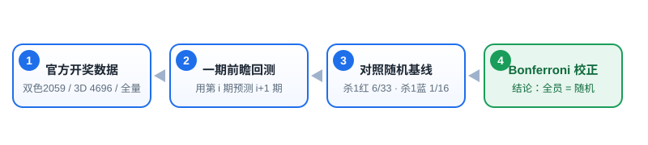

我们站在什么立场 反智商税 · 理性购彩
本站的立场不是"教你中奖"，而是"用数据告诉你：那些收费/引流的秘籍为什么不灵"。
1 · 全量回测
用官方完整历史开奖（双色球 2059 期 / 福彩3D 4696 期 / 六合牌型全量），对每条公式做"用第 i 期预测第 i+1 期"的一期前瞻检验，严禁偷看未来。
2 · 随机基线
杀 1 个红球基线漏杀率 18.18%（6/33）；杀 1 个蓝球 6.25%（1/16）、整期全对 93.75%（15/16）。任何公式的"准确率"都先对标这个照妖镜。
3 · 多重比较校正
同时检验 N 条公式时，用Bonferroni 校正（α=0.05/N），杜绝"75 条里总有一条碰巧显著"的幸存者偏差。

双色球 SSQ 数据最全 · 已证伪 213 法
数据源：中国福利彩票官方 cwl 全量 2059 期（2013001~2026101）。累计 213 条杀号/预测方法全量回测，0 条过 Bonferroni 阈值。
代表报告（点击查看原始核验）
完整 213 条方法见下方可检索表格。
证伪方法分类分布（按条数，每条都 ≤ 随机）
显著性检验全景：213 条方法的 |z| 落点
横轴是按 |z| 分桶的方法条数，竖虚线是 Bonferroni 显著性阈值 |z|≈3.1。只要开奖独立，确定性杀号法的 |z| 应呈以 0 为中心的正态；全部 213 条都落在阈值左侧，无一越线。
随机基线对照：每条秘籍 vs 蒙眼乱杀
横轴是 lift（实测漏杀率相对随机基线的倍数）：lift = 1.000 就是"和蒙眼乱杀一模一样"，只有明显 >1 才算优于随机。 每行的浅蓝色横条 = 该类别所有方法的波动范围，深蓝色竖线 = 该类别平均值，红色虚线 = 随机基线。 所有类别的平均线都紧贴红色虚线，没有任何一类真正偏离随机。
可检索证伪档案（213 条）
lift = 基线 / 实测漏杀率，>1 才优于随机；z 为负数代表"看起来优于随机"但均未过显著性阈值。全部 = 随机。
📊 展开「可检索证伪档案」全 213 条数据表 ▸
| 类别 | 公式 / 方法 | lift | |z| | 判定 |
|---|
互动实验室 你自己亲手证伪
别只听我们下结论 —— 下面两个工具全部在你自己的浏览器里运行，用的是官方 2059 期真实开奖数据，不联网、不上传任何信息。选一条"秘籍"当场回测，或者亲手用纯随机造出一群"大师"。
① 秘籍粉碎机：选一条"秘籍"，当场用 2059 期真实数据回测
统一口径：用第 i 期开奖号码算出"下一期要杀掉的号码"，再看第 i+1 期有没有真的避开 —— 严格一期前瞻，绝不偷看未来。 随机基线：杀 1 个红球漏杀率 18.18%（6/33），杀 1 个蓝球 6.25%（1/16）。
② 幸存者偏差模拟器：就算全是瞎蒙，也一定会诞生"大师"
场景：一群人每期随机"杀 1 个蓝球"（单期猜对概率 93.75%，纯运气、零技巧）。 看看连续若干期之后，会冒出多少个"期期准"的神话。
福彩 3D 已证伪 27 法 · 全量 4696 期
数据源：官方历史开奖库全量 4696 期（2013002~2026201）。27 条杀号 / 取胆 / 选号 / 缩水方法全量或样本外回测，0 条过 Bonferroni 阈值（|z|≥3.11）。
代表报告（全量 / 样本外）
显著性检验全景：27 条方法的 |z| 落点
横轴是按 |z| 分桶的方法条数，竖虚线是 Bonferroni 显著性阈值。3D 的"杀 1 个数字"基线是 90%（单位置）/ 72.9%（三位数），取胆 3 码 65.7%、1D 单胆 27.1%；全部 27 条都落在阈值左侧。
可检索证伪档案（27 条）
"实测 / 基线"为该方法的正确率（杀号=杀对率，取胆选号=命中率）；lift > 1 才优于随机；|z| 为对随机基线的标准化偏离。全部 = 随机。
📊 展开「可检索证伪档案」全 27 条数据表 ▸
| 类别 | 公式 / 方法 | 实测 | 基线 | lift | |z| | 判定 |
|---|
六合彩（澳门） 已证伪 686 法 · OOS 212 期
数据源：璇玑系统 OOS 样本外回测（P30~P241 共 212 期，2026 全量开奖）+《官方数据一致性核查报告》（2026-08-30 修复数据缺陷后重跑）。686 条杀肖公式归档全量证伪，0 条过 Bonferroni 阈值（|z|≥3.11）。
代表报告（OOS 样本外回测）
完整证伪条目见下方可检索表格。
显著性检验结论：686 公式的 |z| 落点
横轴是 686 条杀肖公式在 OOS 212 期回放中观测到的漏杀率偏离随机基线的标准化幅度（|z|）。红色虚线为 Bonferroni 显著性阈值 |z|≈3.1。686 条公式的最大 |z| 仅 1.06（观测漏杀率 92.3% vs 基线 91.6%，p=0.291，不显著），全部远低于阈值。
可检索证伪档案（10 条代表条目）
数字均来自璇玑系统已核实 OOS 回测与《官方数据一致性核查报告》。字段为"—"表示该方法的回测设计本身不产出对应数值（如命中率/OR，依方法而定）。
📊 展开「可检索证伪档案」10 条代表数据表 ▸
| 类别 | 公式 / 方法 | 实测 | 基线 | lift | |z| | 判定 |
|---|
每日观测 系统当天输出 · 纯观测
下面展示某自动化预测系统每天生成的「金胆 / 三胆 / 杀号 / 复式」与福彩 3D 观测。它们是系统的观测输出，不是荐号——下方「命中率对照」会当场证明：这类输出的命中率与蒙眼随机无差异。
双色球 SSQ · 第 — 期 预测
福彩 3D · 第 — 期 预测
常见疑问
- "那杀号到底有没有用？"
- 有——但只是"少买"。杀 1 个蓝球使投注额降 6.25%，中奖概率也同步降 6.25%，单位投注的期望回报率不变（双色球返奖率约 50%，每注期望亏损恒为一半）。与直接少买一注完全等价。
- "为什么作者说 95%~100% 准确率？"
- 在约 100 期的小样本里，闭眼杀 1 个蓝球的随机基线就是 93.75%；95%~98% 在随机下有 3%~33% 概率碰巧达成，本身毫无信息量。只有"100%""135 期 0 错"是真小概率——而若 11 条同时成立，一等奖难度会从 1/1772 万降到 1/554 万，机构一期就能套利到彩票中心破产。它没发生，所以它不是真的。
- "你们的方法能保证不漏掉'真有效'的公式吗？"
- 不能保证任意一条未来公式，但能证明"这一类"方法的数学天花板：只要开奖独立，上期号码的确定性函数漏杀率恒为 6/33（红）/1/16（蓝）。新的花式组合只是换皮。
- "数据从哪来？"
- 双色球来自中彩中心官方全量历史开奖；福彩3D、六合彩来自各自官方/权威历史开奖库。回测严格一期前瞻，杜绝未来信息泄漏。
- "可我朋友上次就是用这个公式中的！"
- 这是小样本错觉叠加幸存者偏差。
① 小样本：在约 100 期里，闭眼杀 1 个蓝球的随机基线准确率就有 93.75%，"连中好几次"在纯随机下极其常见，根本不需要公式。
② 幸存者偏差：用同一条公式却失败的人不会发帖、不会上电视，你看到的只是赢的那一个。
③ 正确的问法不是"他有没有中过"，而是"这条公式在 2000+ 期上的长期漏杀率，是否显著低于随机基线"。本站 213 条的答案是：一条都没有。
你可以到上面的「幸存者偏差模拟器」亲手验证：让 1000 个人纯瞎蒙，照样会冒出一批"大师"。 - "我的公式很复杂，不是只看上一期。"
- 复杂度救不了它 —— 数学上恰恰相反。
只要开奖是独立同分布（iid），那么对任意"历史数据的函数" g，不管它有多复杂、参考了多少期、加了多少层条件，它对下一期的漏杀率恒等于随机基线：
P( g(历史) ∈ 下期号码 ) = 6/33（红球） 或 1/16（蓝球）
复杂度带来的只有两件事：叙事上的说服力（看起来"很有道理"），以及回测时更容易过拟合到历史噪声；一旦进入没见过的新数据，立刻打回原形。
本站 213 条里既有"看上期一个数"的简单公式，也有多期加权、形态识别、条件概率转移的复杂公式 —— 全部没有跑赢随机。 - "既然都不灵，为什么还有人卖秘籍？"
- 因为卖秘籍本身就是一门生意，它的盈利模式和"公式灵不灵"完全无关。
① 信息不对称：卖家不需要预测准，只需要让你相信他准。晒单只截赢的、删输的，你根本看不到全貌。
② 幸存者偏差放大：把不同的"公式"推给上万人，总有几个人连中，这几个人就成了他的"活广告"。
③ 人性弱点：人类天生会在随机里找规律（模式幻觉），并愿意为"掌控感"付费。
④ 零成本、无追责：错了可以说"你没严格按我说的买"，对了就大肆宣传。
一句话：他赚的是你的学费和流量，不是彩票的钱。如果公式真能稳定跑赢随机，他为什么不自己闷声照着买，而要卖给你？
一个经典误区：赌徒谬误 为什么你会觉得"该出了"
这是大多数人相信"秘籍"的底层心理。看懂它，你就看懂了为什么所有"预测"都是幻觉。
① 它长什么样？
双色球连续 3 期都开出了号码「12」，于是你觉得："12 已经热了，下期该回避"，或者 "12 憋太久了，下期该出了"。
这两种直觉都错。开奖是独立事件——下一期「12」出现的概率，永远等于它本来的概率（红球 1/33，蓝球 1/16），跟它之前出没出过、连出几次，一毛钱关系都没有。
② 亲手试：抛硬币实验
连续抛出正面后，下一次正面的概率还是 50% 吗？自己抛几下就明白了。
③ 它和"秘籍"有什么关系？
所有"追热号""杀冷号""对称码""遗漏值"类秘籍，本质都是在赌徒谬误上做文章：误以为过去的开奖能"预示"未来。但开奖是独立事件，过去无法预示未来，于是这些秘籍的命中率，最终都回归到"闭眼随机"。这也正是本站 213+27+686 条回测全死的数学根源。
更新记录 本站维护轨迹
- 六合彩 · 璇玑系统（2026-09）：澳门六合彩概率管理系统「璇玑」治理闭环落地——主预测目标=特码；开奖≈iid 随机、EV 恒≤0 经五轮纯观测确认（真实 EV 门控→空仓）；杀 3 肖 10 期观测试验（P244~P250 已判定 7 期·中 5，≈71.4% vs 随机基线≈75.5%，无 alpha）；目标治理三层（人读宪章 + 机器可读目标 JSON + 自动对齐闸门 A1~A6）建成防漂移；系统正确终态=空仓 + 诚实 EV 披露（real_position=0）。
- 每日观测（#daily）：新增板块，展示双色球 SSQ「金胆/三胆/杀号/复式」（综合分=0.4×频率+0.6×遗漏，与 #ssq 证伪方法论一致）+ 福彩3D 每日观测（v42 预测候选 Top10 + observation-only 观测层画像）。附全量一期前瞻命中率对照：金胆 19.85% ≈ 随机基线 18.18%、三胆 47.82% ≈ 46.39%——当场证明系统输出≈蒙眼随机。合规声明：纯观测/非荐号/开奖前生成开奖后回填/EV≤0。数据由 gen_daily.py 生成 data/daily.js，每次开奖后可重跑刷新。
- 双色球：213 条杀号/预测方法全量一期前瞻回测，0 条越过 Bonferroni 阈值（max|z| = 2.504 < ≈3.1）。数据源：官方 cwl 全量 2059 期。
- 可视化：|z| 显著性直方图、方法分类分布条、可检索 213 条证伪档案表（支持关键词搜索 + 表头排序）。
- 福彩 3D：27 条杀号/取胆/选号/缩水方法全量或样本外回测，0 条越过 Bonferroni 阈值（max|z| = 2.414 < 3.11）。数据源：官方历史开奖库全量 4696 期。
- 六合彩（澳门）：686 条杀肖公式 OOS 证伪（212 期全量回放，686/686 全死，max|z|=1.06 p=0.291）、平肖 p=0.765、开奖≈iid、生肖盲区、数据缺陷修复后结论稳健——已接数据并渲染详表（规模卡 + 代表报告 + 显著性对比 + 可检索 10 条证伪档案）。
- 部署：GitHub Pages 公开上线，含 OG 分享元信息与仓库链接；所有数字均来自已核实回测，不编造未校验数据。
- 留言区：接入纯前端 localStorage 留言板（零配置、无需 GitHub 授权），访客可留名 + 留言 + 删除本人留言；数据仅存本浏览器，属占位框，可后续升级为 giscus 真多人评论区。
- 推广：生成站点二维码与 1080×1350 分享海报（213/27/686 三条核心数据 + 扫码入口），并新增"分享给朋友"区块与 OG/Twitter 分享卡片元信息。
- 视觉：首页 hero 横幅替换为金色天平实拍风格图（1200×480），叠加站点标题与核心数据条，寓意"数据天平称量秘籍真伪"。
- SEO / 分享：新增 1200×630 横版 OG 分享图（assets/og.png）并接入 og:image / twitter:image；新增 robots.txt 与 sitemap.xml；加入 JSON-LD 结构化数据，便于搜索引擎与社交平台抓取。
- 平台素材：生成抖音 9:16 竖版海报（poster-douyin.png，1080×1920）与小红书 3:4 海报（poster-xhs.png，1080×1440），推广文案包已同步桌面。
留言区 说说你的看法
欢迎在下方留言、提问或拍砖。本留言板为纯前端实现，无需任何后台。
说明：本留言板为纯前端演示，留言仅保存在你当前浏览器（localStorage，键 lottery_refute_guestbook_v1）。特点：换设备 / 清除缓存会丢失，且其他访客看不到彼此留言。如需真正的多人互通评论区，可后续升级为 giscus（GitHub Discussions 托管）。